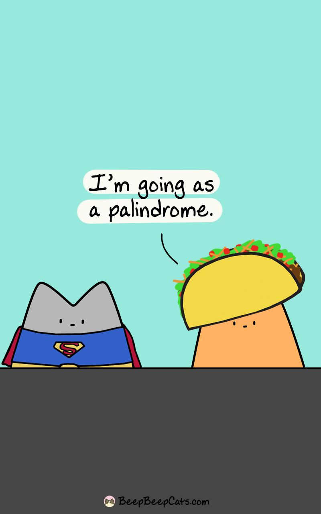

Welcome to TacoCatMVC

Taking the famous Palindrome Algorithm, I have created this web application with an easy-to-use UI and integrated the algorithm functionality. Try entering a string and see if it's a Palindrome.
(NOTE: The webpage may take a few moments to load when navigating to it the first time.)
Go to TacoCatMVC This single paged web application was developed using HTML, Bootstrap and C#. The razor page the user interacts with works with a combination of HTML and C# which helps dynamically load the result information from the string that is submitted. Using the power of C# and Asp.Net, the frontend then talks to the backend through the controller to verify the submitted string using the Palindrome Algorithm. Even though this is a simple one page application, this project still uses the MVC design pattern which helps to deliver a fast and responsive web application.
Back To Projects